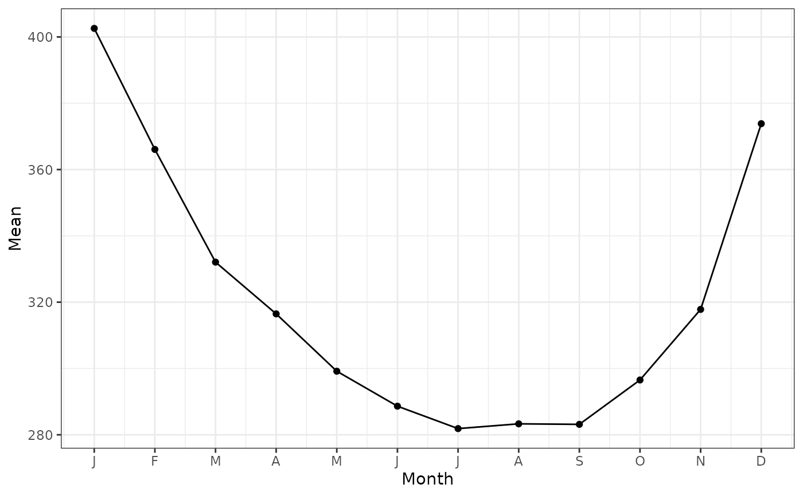
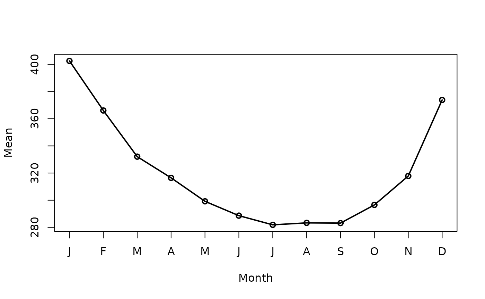

![[Deprecated]](figures/lifecycle-deprecated.svg) Soft-deprecated in favour of
Soft-deprecated in favour of
autoplot.Monthmean(), which returns a ggplot object you can extend
with +. The base R plot below still works.
Usage
# S3 method for class 'Monthmean'
plot(x, ...)Arguments
- x
a
Monthmeanobject produced bymonthmean().- ...
additional arguments passed to the plot.
Author
Adrian Barnett a.barnett@qut.edu.au
Examples
# \donttest{
mmean <- monthmean(
data = CVD,
resp = 'cvd',
offsetpop = expression(pop / 100000),
adjmonth = 'average'
)
#> Total number of days: 5114
mmean
#> Month Mean
#> January 402.6
#> February 366.1
#> March 332.1
#> April 316.5
#> May 299.2
#> June 288.6
#> July 281.9
#> August 283.3
#> September 283.1
#> October 296.5
#> November 317.8
#> December 373.8
# Recommended:
autoplot(mmean)

# Still works, but deprecated:
plot(mmean)

# }